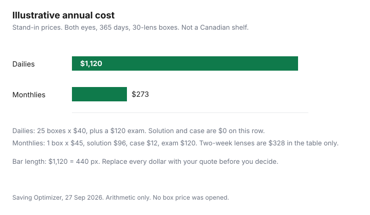

Healthcare · Canada
Contact Lenses in Canada: Annual Cost of Dailies vs Monthlies, and Buying Online vs In-Clinic
A clinic auto-reorder is a habit, not a price. This page turns the habit into a year: lenses per eye, boxes that cover those lenses, solution and cases if the lenses are reused, and the fitting exam if it is billed on its own. No box price, solution price, or fitting fee was on a page as of 27 Sep 2026, so none is printed as a Canadian shelf price. The worksheet uses one labelled illustrative row so the arithmetic is visible. Replace every dollar before you treat it as your bill. Offer types are disclosed below. This is not a ranking of lenses or sellers, and it is not medical advice.
Key takeaways
- Count lenses per eye for the year, divide by lenses in the box, and round up. Dailies, two-week lenses, and monthlies are different counts, not different logos.
- Reusable lenses add solution and a case. Those lines are zero only if you truly do not buy them. No solution price is listed here.
- In Ontario, a contact lens prescription follows a fitting, and it is released once the related fees are paid. A glasses prescription is not the same document. The College of Optometrists of Ontario says the powers can differ because a contact sits closer to the eye.
- Any licensed dispenser, an optometrist or an optician, can fill the prescription. Online buying is allowed to be convenient. The college still tells you to involve a licensed dispenser, especially with a complex fit.
- Prescribed contact lenses are an eligible medical expense on the CRA list in Medical Expenses 2025, and the prescription column is Yes. The threshold on that guide is the lesser of 3 percent of net income or $2,834. Confirm the year you file. A workplace vision maximum is a separate booklet line from the drug plan.
Dailies vs two-week vs monthly lenses: the annual cost formula
Write lenses, not boxes, first. If you wear lenses every day of a 365-day year, daily lenses are 365 lenses per eye, which is 730 lenses for both eyes.
A lens replaced every 14 days is about 26 per eye if you divide 365 by 14 and ignore the fraction, or 27 per eye if you do not stretch the last lens past 14 days. A lens replaced every month is 12 per eye, 24 for both eyes. The box comes second. Annual boxes equal lenses needed divided by lenses printed on that box, rounded up. A 30-lens box and a 90-lens box are not the same year even when the brand name matches.
The formula is the same for every channel: boxes per year times the price of that box, plus solution, plus cases, plus the exam or fitting if it is not already inside another line. A clinic that bills “a year of lenses” still has to survive that division. If the auto-reorder ships more boxes than the lens count needs, the extra boxes are the overpay, and you can see them. If it ships fewer, you will buy a gap box later. The glasses guide uses the same idea for frames and lenses: split the quote until the lines match. Do not copy a glasses price onto a contact box. No contact box price is listed here.
Solution, cases and the other costs that come with reusable lenses
Daily lenses are worn once and discarded, so the solution line is often zero. It is zero only if that is what you do.
Two-week and monthly lenses sit in a case between wears. The fitter names the solution. This page does not name one, and it does not print a bottle price, because no source cited here lists one. Put the bottle you actually buy on the worksheet as price per bottle times bottles per year, or as a monthly amount times 12.
The case is the line people leave off. A case that is “included” for the first month is not included for the twelfth. Replace it on the schedule the fitter gives you, and write that replacement as its own dollar. Eye drops, a spare pair of glasses for the days you cannot wear lenses, and a follow-up visit after the fitting are the same kind of line. If the clinic bundles the follow-up into the fitting fee, write zero and note that the bundle is why. If the follow-up is extra, it belongs in the year. None of those extras had a dated price on a page as of 27 Sep 2026.
Fitting exams and prescriptions: what a valid contact lens prescription includes
The College of Optometrists of Ontario’s public page, as of 27 Sep 2026, says a contact lens exam measures the shape of the eye and how moist the eyes are, usually after a routine eye exam, and that it may include a fitting fee. It does not print the fee.
The same page says a prescription for glasses and for contact lenses must include the prescriber’s name, practice address, telephone number, and signature; your name; the date of the eye exam; and the information a licensed dispenser needs to make the glasses or fit the contacts. A contact lens prescription may also name a brand, material, size, or curvature. The college’s FAQ on release says the contact lens specifications are given when you ask, once the fitter’s judgment is that the fitting is complete and the related fees are paid in full.
Glasses and contacts are not interchangeable prescriptions. The college says the strength can differ because contacts sit closer to the eye. Keep both documents. A seller that accepts a glasses prescription in place of a contact lens prescription is not following the page you just read. OHIP does not make this free for most adults. The college funding page says adults 20 to 64 without an eligible eye condition pay for the exam, and the care page says eye exams are not covered by OHIP for most adults in that age band. The eye-exam guide is the provincial map. Additional testing, if the optometrist recommends it, has to be explained, priced, and consented to before it is done, and it is not a condition of the OHIP-insured exam when you are eligible for that exam. You should be told the cost of glasses or contacts before the service is provided.
Buying online vs in-clinic: price, returns and following up with your eye doctor
The college says any licensed dispenser can fill the prescription. That includes optometrists and opticians.
It also says buying glasses and contacts over the internet can be efficient for some people, and that a complex prescription or certain conditions can be a poor online fit. The instruction on that page is to talk to your optometrist and to work with a licensed dispenser. This guide does not list a return policy, restocking fee, or shipping fee for an online seller, so none is printed. Ask, in writing, who checks the prescription, what happens if the lens does not match the brand or curvature on the prescription, and who you call if the eye is uncomfortable after the box arrives.
In the clinic, the same questions apply, plus one the auto-reorder hides: can you take the prescription and buy the next box somewhere else? The college says you can fill it with any licensed dispenser once you have it. A seller that will not release the prescription after the fitting is paid is a complaint to the college, not a loyalty program. Cosmetic colour lenses sold over the counter are a different product. The college says they can still irritate or infect an eye if they are not used and cleaned properly, and it tells you to talk to an optometrist before you use them. Follow-up is part of the cost even when the box was cheap. Book the visit the fitter asked for. A cheap box that you cannot wear is not the annual cost. It is a second purchase.
Using vision benefits and the medical expense tax credit
A workplace vision maximum is not the drug formulary. The drug-plan guide is how prior authorization and formularies work for prescriptions.
Read the vision line in the same booklet as its own maximum, its own benefit year, and its own rule about whether contacts and the fitting share that maximum. This page does not quote a model booklet, so it does not print a typical vision dollar amount. Submit the invoice that matches what the plan asks for: the prescription, the fitting, or the lenses. If two plans cover you, the coordination guide is the order of claims. Do not assume the second plan pays the remainder until that booklet says it coordinates vision.
On the tax side, CRA’s Medical Expenses 2025 lists vision devices, including eyeglasses, contact lenses, and prescription swimming goggles, as eligible, and the prescription column is Yes. The same guide’s threshold examples use the lesser of 3 percent of line 23600 or $2,834. The medical expense guide walks through which spouse claims and what the threshold does. It is a credit on the amount above the threshold, not a refund of the whole box. Premiums you pay to a private health services plan are a separate eligible line on that list. Confirm the threshold for the year you file. This is not tax advice.
Other payers are narrower than “contacts are covered.” The college funding page says the Non-Insured Health Benefits program can cover vision aids such as glasses or contact lenses, when prescribed, for eligible First Nations and Inuit clients. It says ODSP may help with exams and prescription eyeglasses, and Ontario Works may help with exams once every 24 months and with eyeglasses. Those sentences name eyeglasses, not a contact box, for ODSP and Ontario Works. The Assistive Devices Program on that page is for long-term low vision that cannot be corrected with regular glasses or contact lenses. It is not a coupon for ordinary lenses. Read the program page before you count on it.
Annual cost worksheet
Use your prices in the blank row. The filled row is arithmetic on made-up inputs so the formula can be checked.
It is not a shelf, a clinic, or an online price. Assumptions for that row only: a 365-day year, both eyes, every day, 30 lenses in a box. Dailies need 730 lenses, which is 24.333 boxes, so 25 boxes. Two-week lenses, replaced every 14 days without stretching the fraction, are 27 lenses per eye, 54 lenses, which is 1.8 boxes, so 2 boxes. Monthlies are 24 lenses, which is 0.8 of a box, so 1 box. Solution is entered as a monthly amount times 12. The exam is entered once.
| Line | Dailies | Two-week | Monthlies |
|---|---|---|---|
| Illustrative boxes and price (not a shelf) | 25 boxes × $40 = $1,000 | 2 boxes × $50 = $100 | 1 box × $45 = $45 |
| Illustrative solution | $0 | $8 × 12 = $96 | $8 × 12 = $96 |
| Illustrative case | $0 | $12 | $12 |
| Illustrative fitting exam | $120 | $120 | $120 |
| Illustrative annual total | $1,120 | $328 | $273 |
| Your boxes × your price | |||
| Your solution, case, and exam | |||
| Your annual total |

Sources
- College of Optometrists of Ontario, “Information About Your Care,” as of 27 Sep 2026. Prescription contents, release after the fitting is paid, online buying, fitting exams, OHIP for most adults 20 to 64, and the warning on cosmetic lenses.
- College of Optometrists of Ontario, “Funding Options for Eye Examinations in Ontario,” as of 27 Sep 2026. OHIP intervals, ODSP, Ontario Works, NIHB vision aids including prescribed contact lenses, and ADP for low vision rather than ordinary contacts.
- College of Optometrists of Ontario, FAQ “When must I release contact lens specifications?,” as of 27 Sep 2026. Release on request once the fitting is complete and the related fees are paid.
- Canada Revenue Agency, Medical Expenses 2025 (RC4065), as of 27 Sep 2026. Vision devices, including contact lenses, prescription needed. Threshold examples use the lesser of 3 percent of line 23600 or $2,834.
- No box price, solution price, fitting fee, online return fee, or workplace vision maximum is listed here. The dollar row in the table is illustrative.
Frequently asked questions
Are daily contacts more expensive than monthlies?
They often use far more lenses, so the box line is usually larger, but this page does not have a shelf price to prove a gap in dollars. On the labelled illustrative row, 25 boxes of dailies at $40 come to $1,000 before a $120 exam, and one box of monthlies at $45 plus solution, a case, and the same exam comes to $273. Those inputs are not a Canadian price. Put your box count and your price in the blank row, and add solution only for the lenses you actually reuse.
Can I buy contacts online in Canada?
The College of Optometrists of Ontario says any licensed dispenser, an optometrist or an optician, can fill your prescription, and that buying online can be efficient for some people. The same page tells you to talk to your optometrist first, especially if the prescription is complex, and to work with a licensed dispenser so the fit is checked. This guide does not list a dated shipping fee or return policy, so none is printed. Ask who verifies the brand, material, and curvature on the prescription before you pay.
Do I need a separate contact lens exam?
The college describes a contact lens exam as a step that measures the shape of the eye and how moist the eyes are, usually after the routine exam, and says it may include a fitting fee. The contact lens prescription is released when you ask, after the fitting is complete and the related fees are paid. A glasses prescription is not a substitute. The college says the powers can differ because a contact sits closer to the eye, and no fitting fee was printed on the page as of 27 Sep 2026.
Does my vision plan cover contacts?
That is a line in your booklet, not a national rule. Read the vision maximum, the benefit year, and whether the fitting shares the maximum with the lenses. This page does not quote a model plan, so it does not print a typical coverage figure, and the drug-plan guide is about formularies rather than a vision dollar. NIHB can cover prescribed contact lenses for eligible First Nations and Inuit clients, while the college funding page writes ODSP and Ontario Works up for eyeglasses.
Can contacts be claimed on taxes?
CRA’s Medical Expenses 2025 lists contact lenses with eyeglasses and prescription swimming goggles as eligible vision devices, and the prescription column is Yes. You claim the amount above a threshold, which that guide calculates as the lesser of 3 percent of net income or $2,834. The credit is not a refund of the whole box. Confirm the threshold for the year you file, keep the prescription with the receipts, and treat this as education rather than tax advice.
Researched and drafted with AI assistance and fact-checked against official Canadian sources. How we create content.
Disclosure: Amazon.ca storefronts and optical-retailer referral links are offer types. Saving Optimizer may earn a commission if a partner link is added later. No partnership is claimed with Amazon or any optical retailer. Education only. This page does not rank contact lenses or name a best online seller.